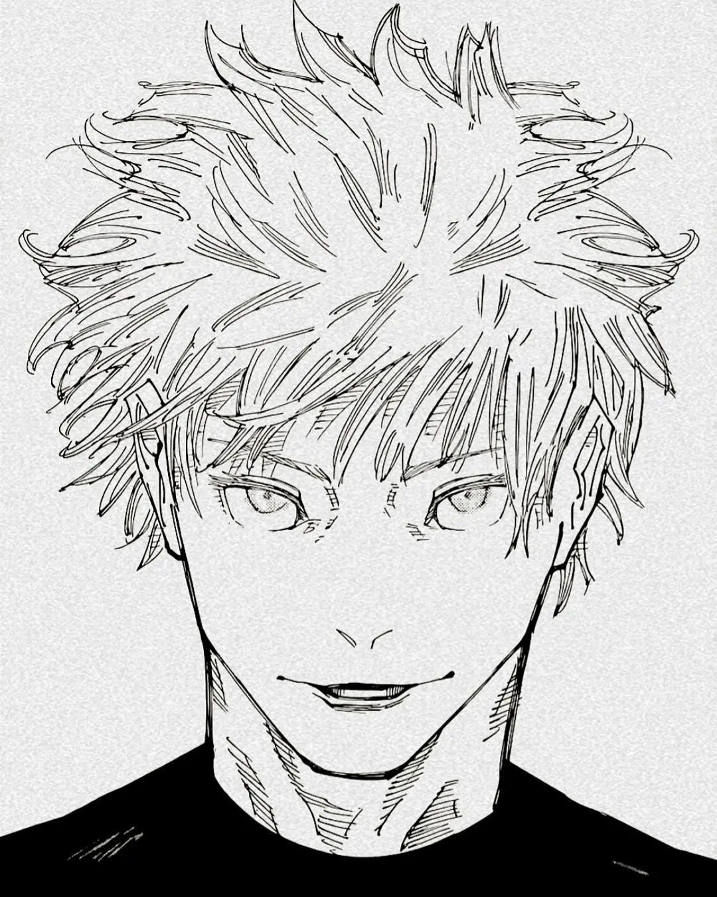
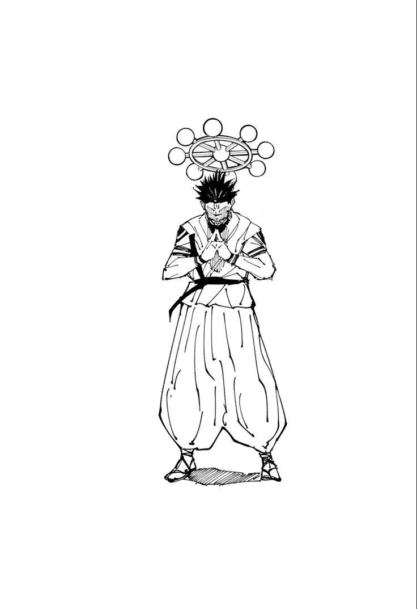
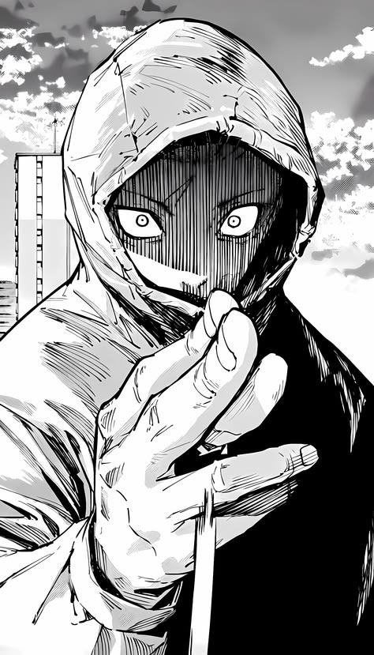

Jujutsu Kaisen
Jujutsu Kaisen é um mangá e anime japonês criado por Gege Akutami. A história segue o jovem Yuji Itadori, que engole um dedo amaldiçoado do poderoso demônio Ryomen Sukuna para salvar seus amigos. Ele entra para uma escola secreta de feiticeiros para achar o resto dos dedos e eliminar o mal.
Um tema diferente sobre, pois eu gostei bastante do roteiro de Jujutsu Kaisen.
Favoritos


